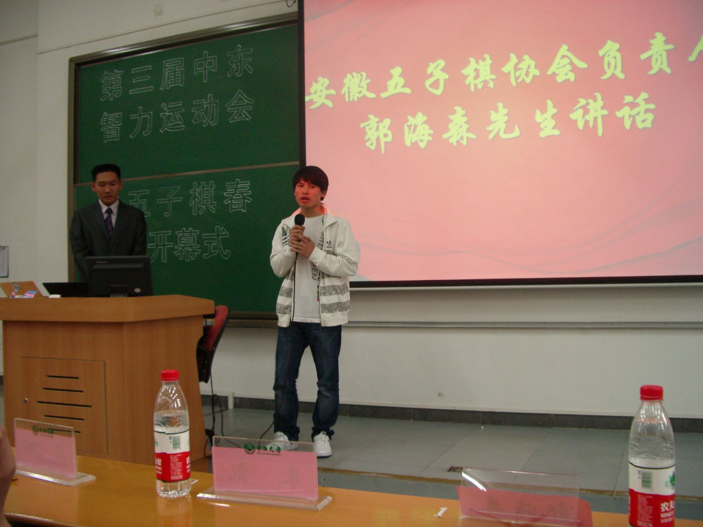

2012年广东五子棋春季赛4月7-8日在中大举办
#1 2012年广东五子棋春季赛4月7-8日在中大举办作者：偶是逆风独立 发表时间：2012-3-26 12:13:03
2012年广东五子棋春季赛
比赛目的：预热将于5月举行第三届广东高校棋类联赛决赛，本次比
赛与中山大学东校区智运会同时举行，为五子棋爱好者提供学习
交流的机会。
主办单位：广东省棋类协会五子棋委员会
广州市围棋协会五子棋分会
协办单位：中大棋苑
比赛时间和地点：
2012年4月7-8日，中山大学东校区公共教学楼E栋1楼
/*760*90，创建于2012-2-9*/ var cpro_id = 'u761865';
#2 Re:2012年广东五子棋春季赛4月7-8日在中大举办作者：伤情路 发表时间：2012-3-26 15:38:03
广东连州是谁...
［ 偶是逆风独立 于 2012-3-27 13:34:32 时花20金币送鲜花一朵］
#3 Re:伤情路【==Re:2012年广东五子棋春季赛4月7-8日在中大举办==】作者：偶是逆风独立 发表时间：2012-3-27 13:34:57
引用：打错，已改。。。
原文由 伤情路 发表于 2012-3-26 15:38:03 :广东连州是谁...
［ 偶是逆风独立 于 2012-3-27 13:34:32 时花20金币送鲜花一朵］

#4 Re:2012年广东五子棋春季赛4月7-8日在中大举办作者：两道 发表时间：2012-3-29 0:18:38
40分钟包干，时间太少了，我建议1小时包干，这样棋的质量会提高很多。也可以采用30分钟加秒
#5 Re:2012年广东五子棋春季赛4月7-8日在中大举办作者：小小亦默 发表时间：2012-3-29 11:42:28
同上#6 Re:2012年广东五子棋春季赛4月7-8日在中大举办作者：无尽 发表时间：2012-3-29 11:45:09
介个用时与5月26日广东高校联赛决赛五子棋比赛一致，给高校的童鞋们习惯下啦，到时候还是加钟的呢```一摸不是也要去比么
［此帖子已被 无尽 在 2012-3-29 11:48:54 编辑过］
#7 Re:2012年广东五子棋春季赛4月7-8日在中大举办作者：伤情路 发表时间：2012-3-29 12:16:40
共用时再加钟也表示无压力...春季赛已经算比较优厚的了...#8 Re:2012年广东五子棋春季赛4月7-8日在中大举办作者：小小亦默 发表时间：2012-3-29 15:42:19
嘿嘿 到时候有空就去深度围观#9 Re:2012年广东五子棋春季赛4月7-8日在中大举办作者：游戏人间 发表时间：2012-3-29 18:30:30
同上~~~~#10 Re:2012年广东五子棋春季赛4月7-8日在中大举办作者：中中 发表时间：2012-3-29 21:46:24
长沙的表示很想去凑凑热闹
#11 Re:2012年广东五子棋春季赛4月7-8日在中大举办作者：淡月疏星 发表时间：2012-3-30 13:08:42
那就去吧 朱其。我也去，从来没有见过你的#12 Re:2012年广东五子棋春季赛4月7-8日在中大举办作者：棋峰 发表时间：2012-4-1 0:12:09
中山大学是在中山吗#13 Re:棋峰【==Re:2012年广东五子棋春季赛4月7-8日在中大举办==】作者：簡單 发表时间：2012-4-1 11:04:39
引用：不是。应该是 广州 大学城那里的中山大学 即 大学城外环东路
原文由 棋峰 发表于 2012-4-1 0:12:09 :
中山大学是在中山吗
#14 Re:2012年广东五子棋春季赛4月7-8日在中大举办作者：冰雪笑醉 发表时间：2012-4-1 11:06:37
中山大学，我一听也以为是在中山呢#15 Re:2012年广东五子棋春季赛4月7-8日在中大举办作者：棋峰 发表时间：2012-4-2 1:07:37
寻求中山大学行的全程费用报销，嘿嘿#16 Re:偶是逆风独立【==2012年广东五子棋春季赛4月7-8日在中大举办==】作者：萱萱 发表时间：2012-4-4 11:39:33
这个周末去围观了
#17 Re:淡月疏星【==Re:2012年广东五子棋春季赛4月7-8日在中大举办==】作者：中中 发表时间：2012-4-4 23:39:38
引用：
原文由 淡月疏星 发表于 2012-3-30 13:08:42 :
那就去吧 朱其。我也去，从来没有见过你的
广州肯定去不了了，最近事儿挺多。
到时候办公开赛了，我应该会去观摩凑热闹，到时候见哈。
衷心希望今年举办公开赛啊，最好是上半年。各种期待............
#18 Re:2012年广东五子棋春季赛4月7-8日在中大举办作者：雅匪 发表时间：2012-4-5 22:10:30
看到广东就想起无尽兄。
颂！
#19 Re:2012年广东五子棋春季赛4月7-8日在中大举办作者：第五象限 发表时间：2012-4-6 12:02:04
中山大学竟然不在中山
#20 Re:2012年广东五子棋春季赛4月7-8日在中大举办作者：伤情路 发表时间：2012-4-6 12:15:29
中山=孙逸仙~
#21 Re:2012年广东五子棋春季赛4月7-8日在中大举办作者：圊籽 发表时间：2012-4-7 10:47:03
原来呢。。中大的师兄师姐们叫广东连珠“省队”喔。。天字在开幕式上发言了～～#22 Re:圊籽【==Re:2012年广东五子棋春季赛4月7-8日在中大举办==】作者：无尽 发表时间：2012-4-7 23:48:53
#23 Re:2012年广东五子棋春季赛4月7-8日在中大举办作者：水晶铃铃 发表时间：2012-4-8 17:52:27


#24 Re:2012年广东五子棋春季赛4月7-8日在中大举办作者：竹本水鸟 发表时间：2012-4-8 22:22:31
中东 智力运动会。。。。全部阿拉伯人。。。。#25 Re:2012年广东五子棋春季赛4月7-8日在中大举办作者：水晶铃铃 发表时间：2012-4-8 23:26:59
虾米？阿拉伯人？。。。。。。。中东 智力运动会？